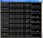

This is the DirectX SDK's CoreDetection Win32 desktop sample updated to eliminate all dependencies on legacy DirectX SDK content.

This sample demonstrates how to obtain details about the physical and logical core processor layout for Windows x86 and x64 systems. Robust handling of this detection is required for Win32 desktop applications making use of the SetThreadAffinityMask API.
On Windows XP Service Pack 3, Windows Vista, Windows 7, and Windows 8.x the preferred method for detecting CPU information is using the GetLogicalProcessorInformation API. Prior to that, the CPUID information must be properly decoded, handling various vendor-specific differences. The CPUID implementation can be removed if the application only supports Windows Vista or later (such as a Direct3D 11 only application).
This sample also works around some known issues with the GetLogicalProcessorInformation API. See KB 932370.
See the Coding For Multiple Cores on Xbox 360 and Microsoft Windows article for more information.
Both SetThreadAffinityMask and GetLogicalProcessorInformation are desktop only APIs. Therefore, this sample does not apply to Windows Store apps.
The Visual Studio 2010 project files can be updated to use Visual Studio 2012 automatically. Be sure to add to the Processor Definitions of all configurations _WIN32_WINNT=0x0600 so the resulting EXE will be compatible with Windows Vista, Windows 7, and Windows 8.x.